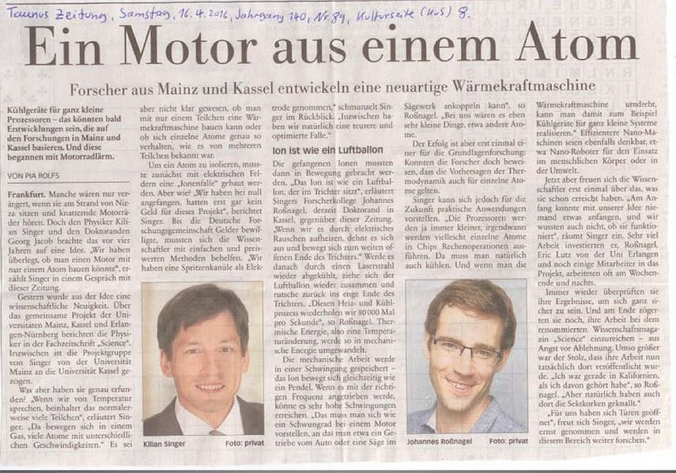

Willkommen zu der Webseite von Wolfgang Singer
Hallo Maya, Ju, und Ki ich hab euch lieb. Und mein Hobby ist: Genealogie
Burj Khalifa ist mit 828 Meter Höhe das höchste, meistbesuchteste Bauwerk der Welt und befindet sich im Stadtteil Downtown Dubai, dem "neuen Zentrum" der Wüstenmetropole am Arabischen Golf.

GästebuchMandelblüte
Motor mit 1 Atom von Prof. Dr. Kilian Singer
Was waren im Jahr 2016 die wichtigsten Errungenschaften und Entdeckungen in der Welt der Physik?
Die zehn Highlights des Jahres kürt jedes Jahr das Magazin "Physics World". In diesem Jahr ist der unangefochtene Durchbruch des Jahres 2016 der Nachweis der Gravitationswellen durch die LIGO-Detektoren. Unter den Top Ten ist aber auch die Forschung von Prof. Dr. Kilian Singer.
Übersetzung aus "Physicworld", wo die Forschung meines Sohnes mit anderen 9 bahnbrechenden Erfindungen aus dem Jahr 2016 beschrieben wird:
Physiker in Deutschland haben die mechanische Miniaturisierung bis zur endgültigen Grenze durch die Herstellung einer Wärme-Engine - eine der wichtigsten Erfindungen der klassischen Thermodynamik - aus nur einem Atom genommen und haben ihre Leistung gemessen. Während mikroskopische Wärmekraftmaschinen in der Vergangenheit vorgeschlagen und gebaut wurden, ist dieses Einzelatom-Design das bisher kleinste.
Die Wärmekraftmaschine, die einen Temperaturunterschied zur mechanischen Arbeit umsetzt, ist die archetypische Maschine der klassischen Thermodynamik. Die klassische thermodynamische Definition der Temperatur bezieht die mittlere Energie einer großen Anzahl von Teilchen ein und ist daher nicht direkt auf ein einzelnes Atom anwendbar. Jedoch kann eine gut definierte, klassische thermodynamische Temperatur für ein solches Teilchen unter Verwendung des sogenannten ergodischen Theorems erhalten werden, das besagt, daß die mittlere Energie einer großen Anzahl von Teilchen in einem Raumbereich gleich der Energie von ist Ein einzelnes Teilchen über einen Zeitraum. "Das war ein wirklich kniffliger Teil des Designs der Wärmekraftmaschine: Wie können Sie von der zeitlich gemittelten Temperaturdefinition Gebrauch machen?" Erklärt Lead-Forscher Prof. Kilian Singer von der Universität Mainz.
Temperaturfalle
Die Lösung bestand darin, das Teilchen, das in diesem Fall ein Calciumion (40Ca +) war, in einer trichterförmigen Falle zu beschränken, wodurch es einer Brownschen Bewegung in einer radialen Richtung unterzogen werden konnte. Die Forscher erhitzten dann das Ion unter Verwendung von elektrischem Rauschen, und als seine Temperatur zunahm, wurden seine Oszillationen in der radialen Richtung größer, was dazu führte, daß es Bereiche mit höherem Potential abtastet und das Teilchen zum Ende der Falle schob, an dem es weniger eng begrenzt war . "Sie können es sich wie einen Ballon in einem Trichter vorstellen", erklärt Teammitglied Johannes Roßnagel, der Singer's Doktorand ist. "Wenn Sie den Ballon aufblasen, bewegt er sich auf das größere Ende des Trichters."
Wenn das elektrische Rauschen jedoch abgeschaltet wurde, wurde das Ion abgekühlt, wodurch es zurück zum schmaleren, steileren Ende der Falle fiel. Durch periodisches Ein- und Ausschalten des Rauschens stellen die Forscher axiale Oszillationen des Ions zwischen den beiden Enden der Falle her. Wenn sie ungedämpft bleiben würden, wären diese Oszillationen immer größer geworden, bis das Teilchen der Falle entkam. Die Forscher haben jedoch einen weiteren Laser angewendet, um die Oszillationen zu dämpfen, wodurch das Teilchen in stetigen harmonischen Schwingungen gehalten wird.
Automatischer Vergleich
"Wir haben das Dämpfungsverhalten des Lasers sehr gut charakterisiert und wissen genau, wie viel Energie durch diesen Dämpfungslaser abgeführt wird", sagt Roßnagel. "Wir wissen, dass in einem stationären Zustand die vom Motor erzeugte Energie und die durch den Dämpfungslaser gedämpfte Energie gleichwertig sind. So bestimmen wir die Ausgangsleistung des Motors." Die Forscher berechneten die Ausgangsleistung und fanden es auf etwa 3,5 × 10-22 W. Wenn nach der Anzahl der Teilchen und der Differenz zwischen den Temperaturen des heißen und kalten Reservoirs skaliert, berechnen die Forscher, dass diese Ausgangsleistung vergleichbar mit der eines modernen Automotors.
Während Roßnagel selbst zugibt: "Sie werden nie einen von unserer Wärmekraftmaschine angetriebenen Mercedes finden", meint er, dass das Hauptziel des Teams darin besteht, die Thermodynamik einzelner Teilchen für die zukünftige Entwicklung anderer Geräte besser verstehen zu lernen. Insbesondere sind die Forscher daran interessiert, die Idee um die Herstellung von Kühlschränken für Hitze-Management in der Nano-Elektronik. Ihr nächstes Forschungsziel ist es, das Atom weiter zu kühlen und es enger zu begrenzen, so dass es sich nicht mehr als klassisches Teilchen verhält, das einer Brownschen Bewegung, sondern einem Quantenwellenpaket unterliegt. "Der Raum an der Unterseite ist in der Temperatur," sagt Singer.
Cold-Atom-Physiker Jean-Philippe Brantut von der ETH Zürich beschreibt die Arbeit als "eine große Leistung", sowohl als "Meilenstein" als auch als Zeiger auf zukünftige Arbeit. "Von diesem Punkt an können sie wirklich beginnen, zu erforschen, wie Thermodynamik sich im Kontakt mit Quantenmechanik verhält, und das ergibt irgendwo eine Menge offener Fragen."